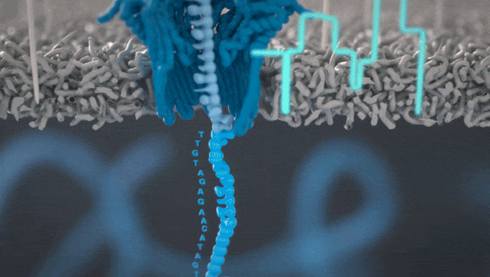

TP 4. Trabajo integrador
Preparación de Ambientes Conda y Descarga de Datos
En esta sección se detallan los ambientes Conda necesarios para el TP, los programas que deben instalarse y los datasets requeridos.
Vamos a generar tres ambientes Conda separados. Esto es necesario porque algunos de los programas que utilizaremos dependen de distintas versiones de Python o de paquetes específicos, y esas dependencias pueden ser incompatibles entre sí si se instalan en un mismo entorno.
Al separar los ambientes, garantizamos que cada herramienta funcione correctamente sin interferir con las demás.
📁 Configuración Inicial y Datos
Pasos iniciales para comenzar
-
Generar una carpeta para el TP04.
-
Generar los enviroments y descargar los materiales como se indica a continuación
Datos: Los archivos de secuencias se proporcionan en formato .fastq. Han sido submuestreados (~25X) y sin adaptadores para ahorrar tiempo.
🟦 Environment 1: nanoplot
Tabla
| Environment | Programa | Observación |
|---|---|---|
| nanoplot | NanoPlot | Debe estar en un entorno separado |
Comandos
# Crear ambiente
conda create -n nanoplot python=3.10 -y
# Activar
conda activate nanoplot
# Instalar NanoPlot
conda install -c bioconda nanoplot -y
# Listar paquetes instalados
conda list
# Desactivar
conda deactivate
🟩 Environment 2: ensamble
Incluye las herramientas de ensamblaje, estadísticas y QC.
Tabla
| Programa | Canal / Nota |
|---|---|
| Flye | bioconda |
| Hifiasm | bioconda |
| Minimap2 | bioconda |
| Samtools | bioconda |
| Compleasm | bioconda |
| assembly-stats | bioconda |
| seqkit | bioconda |
| subread | bioconda (featureCounts) |
| pigz | conda-forge |
| ncbi-datasets-cli (opcional) | conda-forge |
| calN50.js | Descargar archivo .js |
| minigff.js | Descargar archivo .js |
| Bandage | Instalar binario (GUI) |
| lifton | Instalación manual |
Comandos
# Crear ambiente
conda create -n ensamble -y
# Activar
conda activate ensamble
# Instalar herramientas principales
#Va a tardar unos minutos en "solving Enviroment", no se preocupen, es normal
conda install -c bioconda -c conda-forge flye \
hifiasm \
minimap2 \
samtools \
compleasm \
assembly-stats \
seqkit \
subread \
ncbi-datasets-cli \
pigz
# Ver paquetes instalados
conda list
# Desactivar
conda deactivate
🟪 Environment 3: anotacion (LiftOn)
Tabla
| Programa | Detalle |
|---|---|
| LiftOn | Instalación desde código fuente |
Comandos
# Crear ambiente
conda create -n anotacion python=3.10 -y
# Activar
conda activate anotacion
# Instalar dependencias
conda install -c bioconda -c conda-forge minimap2 \
samtools \
miniprot \
cmake \
bedops
# Descargar LiftOn y gffutils
# Paciencia con este paso, puede tardar un poco
pip install LiftOn gffutils==0.11.1
sudo apt install subread
# Ver paquetes
conda list
# Desactivar
conda deactivate
Verificar la generación de todos los ambientes
conda env list
Deberías ver algo asi:
conda environments:
base * /home/user/miniconda3
quast /home/user/miniconda3/envs/quast #Generado para el TP2
tp2 /home/user/miniconda3/envs/tp2 #Generado para el TP2
tp3 /home/user/miniconda3/envs/tp3 #Generado para el TP3
nanoplot /home/user/miniconda3/envs/nanoplot #Generado para este TP
ensamble /home/user/miniconda3/envs/ensamble #Generado para este TP
anotacion /home/user/miniconda3/envs/anotacion #Generado para este TP
📂 Datos para Descargar
1. Ingresar a la carpeta del TP04
2. Descargar los siguientes archivos
✔️ Lecturas ONT (FASTQ)
SRR32300787_subsampled.fq.gz
Las pueden descargar de este link
✔️ Datos RNA-Seq Long Reads
Ingresar al siguiente link y descargar los siguientes archivos:
-
Un archivo de lecturas ADN
-
Los archivos de lecturas ARN
Trabajo integrador
🎯 Objetivos
Objetivos principales
- Secuenciar el genoma completo eucromático de Drosophila melanogaster
- Probar la viabilidad de Whole-Genome Shotgun en eucariotas complejos
- Generar recursos genómicos abiertos y anotados para la comunidad científica
🔍 Control de Calidad de Long Reads (NanoPlot)
¿Qué es NanoPlot?
NanoPlot es una herramienta especializada para el control de calidad de secuencias largas (Nanopore/PacBio).
Si te interesa leer más acá hay algunos links de interés:
Ahora vamos a correr el comando para general la visualización
conda activate nanoplot
# Renombrar el archivo
mv Galaxy1-\[SRR32300787_subsampled.fastq.gz\].fastqsanger.gz SRR32300787_subsampled.fastq.gz
# Para chequear que el archivo se descargó correctamente:
md5sum SRR32300787_subsampled.fastq.gz
# Debería dar: b3b0c594dc5844f6e2d1dc1dfe836173
# Y chequear el tamaño del archivo
ls -ltah SRR32300787_subsampled.fastq.gz
# Recuerden activar el entorno correspondiente
NanoPlot -t 8 --dpi 300 --N50 -o ./resultado_nanoplot --huge --fastq SRR32300787_subsampled.fastq.gz
Las opciones usamos en este caso:
-t 8: Número de núcleos--dpi 300: Calidad de imagen (puntos por pulgada)--N50: Añade línea N50 en los gráficos-o ./resultado_nanoplot: Carpeta de salida--huge: Optimiza para archivos grandes--fastq SRR32300787_subsampled.fastq.gz: Archivo de datos fastq
Cuando corremos NanoPlot aparece un WARNING
Cuando corremos NanoPlot aparece la siguiente advertencia:
WARNING:root:Plotly could not fetch or find Chrome automatically
Este aviso aparece porque Plotly no pudo detectar automáticamente la instalación de Chrome, aunque esté instalado.
El programa genera los reportes correctos a pesar de este error, los pueden abrir en la carpeta del TP04
Manual de NanoPlot
Para ver más opciones de uso podemos consultar el manual:
NanoPlot -h
Tiempo estimado y acceso al reporte
- Tiempo estimado: ~3 minutos
- El reporte se genera como
NanoPlot-report.htmlen la carpetaresultado_nanoplot
Ejercicio 1
-
¿Cuáles son las métricas principales que observaste (N50, longest reads, calidad promedio)?
-
¿Qué información adicional te resultó útil del reporte?
Guía de archivos generadas por NanoPlot
Descripción de los archivos generados por NanoPlot
1. Gráficos de longitud y calidad de lecturas
-
LengthvsQualityScatterPlot_dot.png / .html
Gráfico de dispersión que muestra la relación entre longitud y calidad de las lecturas (puntos individuales). -
LengthvsQualityScatterPlot_kde.png / .html
Mapa de densidad (KDE) de longitud vs. calidad, útil para visualizar tendencias en datasets grandes.
2. Histogramas de longitudes
-
Non_weightedHistogramReadlength.png / .html
Histograma de longitudes sin ponderar (cada lectura cuenta igual). -
WeightedHistogramReadlength.png / .html
Histograma ponderado por longitud, útil para visualizar el aporte de bases por rango de tamaños. -
Non_weightedLogTransformed_HistogramReadlength.png / .html
Mismo histograma no ponderado, pero con el eje de longitudes en escala logarítmica. -
WeightedLogTransformed_HistogramReadlength.png / .html
Histograma ponderado con escala logarítmica.
3. Rendimiento por longitud
- Yield_By_Length.png / .html
Muestra cuántas bases totales se obtienen para diferentes longitudes de lectura.
4. Reportes y estadísticas
-
NanoStats.txt
Contiene estadísticas clave: número de lecturas, longitudes mínima/mediana/media/máxima, N50, calidades y total de bases. -
NanoPlot-report.html
Reporte interactivo con todos los gráficos integrados. -
NanoPlot_YYYYMMDD_HHMM.log
Archivo de log con la información del análisis realizado.
Salida de NanoPlot
Si este comando te dio error podés encontrar el output de la corrida en este link
🔨 Ensamblaje De Novo
El ensamblaje de novo consiste en reconstruir un genoma sin usar una referencia, uniendo lecturas de secuenciación únicamente a partir de sus solapamientos.
Es esencial cuando no existe un genoma de referencia o cuando se buscan regiones nuevas no presentes en genomas conocidos.
Según la tecnología, se aplican distintas estrategias:
-
Lecturas cortas (Illumina): grafos de Bruijn.
-
Lecturas largas (ONT/PacBio): grafos de solapamiento (OLC).
El resultado típico son contigs y scaffolds, que luego pueden pulirse para obtener un ensamblaje más preciso.
En este caso se pueden usar dos programas:
-
Hifiasm está orientado a lecturas PacBio HiFi, que son muy precisas. Permite ensamblajes rápidos y altamente fieles, incluso con separación haplotípica (phasing).
-
Flye está optimizado para lecturas largas ruidosas (como ONT o PacBio CLR). Reconstruye el genoma mediante un enfoque OLC y destaca por su robustez en genomas con muchas repeticiones.
Ambas herramientas son ampliamente utilizadas en genómica moderna para obtener ensamblajes completos y de alta calidad, especialmente en especies sin referencia disponible. En este práctico vamos a usar Hifiasm
Hifiasm
Este computadoras con menos de 16GB de RAM puede no funcionar, en este caso pueden descargar el resultado de este link
# Si están en el env de nanoplot correr:
# conda deactivate
conda activate ensamble
hifiasm -o hifiasm -t 8 -l0 --telo-m TTAGGC SRR32300787_subsampled.fastq.gz 2> hifiasm.log
-o hifiasm: Prefijo de salida-t 8: Núcleos-l0: Desactiva purga de duplicados--telo-m TTAGGC: Secuencia de telómeros (C. elegans)2> hifiasm.log: Guarda logs- Tiempo estimado: ~15 minutos
Cuando termine de correr, abrir el archivo hifiasm.log para verificar que se haya ejecutado correctamente
Optativo: Si les interesa Flye, pueden correr esto
Comando para correr Flye
conda activate ensamble
# Chequeen si su archivo tiene el nombre correcto o si lo tienen que modificar a mano
flye --pacbio-hifi SRR32300787_subsampled.fastq.gz -t 8 -o ./flye
--pacbio-hifi: Archivo PacBio CCS-t 8: Núcleos-o ./flye: Carpeta de salida- Tiempo estimado: 20-30 minutos
Importante: Al finalizar, cambia el nombre y ubicación del archivo FASTA generado para correr el siguiente comando.
Tras correr el programa vamos a procesar el archivo de salida:
# Extrae las secuencias de los nodos tipo "S" del archivo GFA
# y las convierte a formato FASTA. El identificador será el campo 2
# y la secuencia el campo 3.
# Dentro del env ensamble
awk '/^S/{print ">"$2; print $3}' hifiasm.bp.p_ctg.gfa > hifiasm_celegans.fa
Salida de hifiasm
Si este comando te dio error podés encontrar el output de la corrida en este link
📊 Análisis del Ensamblaje
El análisis del ensamblaje permite evaluar la calidad, completitud y continuidad del genoma reconstruido.
Generalmente incluye métricas como:
- Número de contigs y tamaño total ensamblado.
- N50 / L50, que indican la continuidad del ensamblaje.
- Longitud del contig más largo y distribución de tamaños.
- Completitud génica evaluada con herramientas como BUSCO.
- Identidad y cobertura frente a una referencia (si existe), mediante alineamientos.
- Detección de duplicaciones, gaps o regiones potencialmente mal ensambladas.
Estas evaluaciones permiten determinar si el ensamblaje es confiable y si requiere pasos adicionales, como pulido o filtrado.
-
Indexado del Genoma
Este paso prepara el genoma para consultas rápidas y mapeo.
# Dentro del env ensamble samtools faidx hifiasm_celegans.fa -
Estadísticas Generales (seqkit stats)
Este comando calcula estadísticas básicas del ensamblaje, como número de secuencias, tamaño total, longitud mínima y máxima, y N50 preliminar.
# Dentro del env ensamble seqkit stats hifiasm_celegans.fa- Ejemplo de resultado:
- Secuencias: 162
- Longitud total: 108,742,274
- Mínima: 6,951
- Promedio: 671,248.6
- Máxima: 8,924,653
- Ejemplo de resultado:
-
Estadísticas Detalladas (assembly-stats)
Este comando genera un resumen más detallado del ensamblaje, incluyendo métricas de continuidad (N50, L50), distribución de longitudes y otros valores útiles para evaluar la calidad global.
# Dentro del env ensamble assembly-stats hifiasm_celegans.fa- Ejemplo de resultado:
- Suma: 108,742,274
- N = 162
- Promedio: 671,248.60
- Largest: 8,924,653
- N50: 3,735,249 (n=10)
- N100: 6,951 (n=162)
- N_count: 0
- Gaps: 0
- Ejemplo de resultado:
-
Visualización Gráfica (Bandage)
Permite explorar de forma interactiva el grafo del ensamblaje, visualizar contigs, conexiones y posibles regiones ambiguas, lo que ayuda a detectar problemas estructurales o evaluar la continuidad del ensamblaje generado.
- Descargar Bandage.
- Descoprimir y abrir Bandage
- Ve a FILE > LOAD GRAPH y selecciona
hifiasm.bp.p_ctg.gfa. - Pulsa Draw graph para ver el ensamblaje.
- Pulsa More info para ver estadísticas detalladas.
Ejercicio 2
- ¿Cuántos contigs se obtuvieron en el ensamblaje de novo?
- ¿Cuál es el más largo y qué tamaño tiene?
- ¿Cuál es el más corto y qué tamaño tiene?
- ¿Qué contig tiene la mayor cobertura?
- ¿Qué contig tiene la menor cobertura?
✅ Control de Calidad (QC) del Ensamblaje: Compleasm (BUSCO)
La evaluación de la completitud es un paso fundamental para determinar la calidad biológica de un ensamblaje de novo. Para ello se utilizan herramientas basadas en conjuntos de genes altamente conservados, los genes BUSCO, que funcionan como un estándar para estimar cuán completo está un genoma reconstruido.
🔬 ¿Qué es BUSCO?
BUSCO (Benchmarking Universal Single-Copy Orthologs) es un conjunto de ortólogos altamente conservados que, en teoría, deberían estar presentes como copias únicas en la mayoría de los organismos de un mismo linaje (eucariotas, bacterias, hongos, etc.).
Evaluar un ensamblaje contra estos genes permite estimar:
- cuántos están completos,
- cuántos están fragmentados,
- cuántos están duplicados,
- y cuántos están ausentes.
De esta forma, BUSCO se convierte en un indicador robusto de completitud y calidad funcional del ensamblaje.
⚡ ¿Qué es Compleasm?
Compleasm es una herramienta reciente que utiliza los mismos conjuntos de genes BUSCO, pero implementa un enfoque más rápido y preciso para evaluar ensamblajes.
Sus ventajas principales son:
- análisis significativamente más rápido,
- mejor detección de genes completos,
- rendimiento superior en ensamblajes grandes o de alta calidad.
El resultado final es compatible con BUSCO, pero con una ejecución más eficiente.
Esta evaluación es clave para validar que el genoma reconstruido tiene la calidad necesaria para anotación o análisis comparativos.
-
Descargar la base de datos
2. Copiar el archivo hifiasm_celegans.fa a la carpeta resultados_compleasm# Dentro del env ensamble mkdir resultados_compleasm cd resultados_compleasm compleasm download -L ./ --odb odb12 nematoda -
Ejecutar Compleasm
# Dentro del env ensamble compleasm run -a hifiasm_celegans.fa -t 8 -L ./ -l nematoda -o ./compleasm-
Opciones usadas
-a: Genoma FASTA-t: Núcleos-L: Carpeta de lineages-l: Lineage (nematoda)-o: Carpeta de salida
-
Ejemplo de salida (summary.txt):
- Single Copy Complete Genes (S): 99.50% (593)
- Duplicated Complete Genes (D): 0.17% (1)
- Fragmented Genes (F): 0.17% (1)
- Fragmented Genes (I): 0.00% (0)
- Missing Genes (M): 0.17% (1)
- Total Genes Evaluados (N): 596
-
Descripción del Output
El resultado de la evaluación realizada por compleasm se guarda en el archivo summary.txt dentro de la carpeta de salida. Estos genes BUSCO se clasifican en las siguientes categorías:
- S (Genes Completos en Copia Única): Genes BUSCO que se pueden alinear completamente en el ensamblaje, con solo una copia presente.
- D (Genes Completos Duplicados): Genes BUSCO que se pueden alinear completamente en el ensamblaje, con más de una copia presente.
- F (Genes Fragmentados, subclase 1): Genes BUSCO en los que solo una parte del gen está presente en el ensamblaje, y el resto no se puede alinear.
- I (Genes Fragmentados, subclase 2): Genes BUSCO en los que una sección del gen se alinea a una posición en el ensamblaje, mientras que la parte restante se alinea a otra posición.
- M (Genes Ausentes): Genes BUSCO que no presentan alineamiento en el ensamblaje.
Ejercicio 3
-
¿Qué significa tener un alto porcentaje de genes completos?
-
¿Por qué es importante la cantidad de genes duplicados o faltantes?
Salida de Compleasm
Si este comando te dio error podés encontrar el output de la corrida en este link
✍️ Anotación del Ensamblaje: LiftOn
La anotación es el proceso de identificar genes y elementos funcionales dentro del genoma ensamblado.
Para agilizar este paso, herramientas como LiftOn permiten transferir anotaciones existentes desde un genoma de referencia hacia nuestro ensamblaje de novo.
LiftOn utiliza alineamientos entre el ensamblaje y un genoma previamente anotado para "levantar" (lift over) características como genes, exones y transcritos, generando una anotación inicial rápida y consistente.
Este enfoque es especialmente útil cuando el organismo estudiado tiene un genoma de referencia cercano, ya que permite obtener anotaciones comparables sin realizar una predicción génica completa desde cero.
✔️ Genoma de C. elegans
-
Crear una carpeta para la sección LiftOn
-
Descargar los datos:
# Dentro del env ensamble # Descargar usando datasets download genome accession GCA_000002985.3 --include genome,gff3,gtf -
Descomprimir el archivo descargado
-
Copiar los siguientes archivos a la carpeta:
-
Ensamblaje objetivo (FASTA):
hifiasm_celegans.fa -
Ensamblaje de referencia (FASTA):
GCA_000002985.3_WBcel235_genomic.fna -
Anotación de referencia (GFF3):
genomic.gff
-
-
Si estás en el enviroment de (ensamble), desactivalo. Si estás en (base) desestimá este paso
-
Activá el env de anotación
-
Descargar este archivo
-
Ejecutar LiftOn
# Si están en el env de ensamble correr: # conda deactivate # Dentro del env anotacion lifton \ -g genomic.gff \ -t 8 \ hifiasm_celegans.fa \ GCA_000002985.3_WBcel235_genomic.fna-
Opciones usadas:
-g: Anotación genómica-o: Archivo de salida--copies: Busca copias adicionales--sc 0.95: Identidad mínima de secuencia-t 8: Núcleos
-
Resultados clave:
- Total features in reference: 44,795
- Lifted features (mapeadas): 28,942
- Missed features (perdidas): 15,853
- Total features in target: 29,916
- Protein-coding feature (single copy): 19,795
-
Si te da error corré esto
LiftOn consume mucha memoria RAM y puede no funcionar, en ese caso se puede correr:
lifton \
-g genomic.gff \
-t 8 \
--no-orf-search \
hifiasm_celegans.fa \
GCA_000002985.3_WBcel235_genomic.fna
Ejercicio 4
-
¿Qué porcentaje de features se logró mapear?
-
¿Por qué puede haber features perdidas?
Salida de LiftOn
Si este comando te dio error podés encontrar el output de la corrida en este link
📈 Cuantificación de RNAseq (Long Reads)
En esta sección realizamos la cuantificación de RNA-seq usando lecturas largas, basado en los datos del estudio Full-length direct RNA sequencing reveals extensive remodeling of RNA expression, processing and modification in aging Caenorhabditis elegans (Schiksnis, Nicastro & Pasquinelli).
Este enfoque permite:
-
Capturar transcritos completos (full-length) sin necesidad de ensamblaje o reconstrucción de isoformas.
-
Cuantificar la expresión génica considerando todas las isoformas presentes, lo que mejora la resolución frente a RNA-seq tradicional de lecturas cortas.
-
Evaluar cambios en procesamiento de RNA: empalmes, variación de extremos, edición, modificaciones, etc.
-
Observar cómo varía el transcriptoma con condiciones biológicas (por ejemplo, en envejecimiento) con una cobertura más precisa y un perfil más completo de isoformas.
En esta sección usaremos los datos de RNA-seq long reads del artículo para quantificar la abundancia de transcritos, comparar expresión entre condiciones, y explorar la diversidad y cambios en isoformas a lo largo del experimento.
Referencia:
Full-length direct RNA sequencing reveals extensive remodeling of RNA expression, processing and modification in aging Caenorhabditis elegans Erin C Schiksnis, Ian A Nicastro, Amy E Pasquinelli, doi.org/10.1093/nar/gkae1064 (link)
Pasos a seguir
-
Conviertir anotaciones GFF3 a formato BED.
# Dentro del env anotacion cp lifton_output/liftoff/liftoff.gff3 . k8 minigff.js all2bed liftoff.gff3 > celegans_hifiasm_lifton.bed gff2bed < lifton.gff3 > celegans_hifiasm_lifton.bed -
Indexado del Genoma para Splicing
# Dentro del env anotacion minimap2 -x --splice-junc-bed celegans_hifiasm_lifton.bed -d celegans_hifiasm.mmi hifiasm_celegans.fa-x splice: Para reads de cDNA/RNAseq--junc-bed: Sitios de splicing
-
Mapeo, Ordenamiento, Compresión e Indexado (batch)
-
Este paso requiere los archivos de la carpeta Lecturas ARN. Copiar el de Lectura RNA que descargaste al comienzo del TP en la carpeta de trabajo
-
Descargar este script
# Dentro del env anotacion chmod -x minimap2_ej3.sh bash minimap2_ej3.sh #Este paso tarda unos minutos porque procesa todos los archivos de Lecturas ARN.- El script Lee cada archivo fastq, mapea, ordena y genera BAM + índice.
- Tiempos estimados: ~1 min indexado, 5-6 min por muestra.
-
-
DTU differential transcript usage (uso diferencial de transcriptos)
Descargar el archivo dexseq.R, abrirlo en Rstudio y correrlo
Ejercicio 5
-
¿Qué ventajas/desventajas tiene el uso de featureCounts en este contexto?
-
¿Qué problemas pueden surgir con los archivos BAM o las anotaciones?
Archivos de esta sección
Si este comando te dio error podés encontrar el output de la corrida en este link
Ejercicoi adicional
Kraken2
¿Por qué usar Kraken2?
Se recomienda comprobar si hay contaminantes en el ensamblaje. Kraken2 es una herramienta fácil y rápida para este propósito.
-
Carga del Ensamble en Galaxy Europe
- Ingresa a usegalaxy.eu y sube el archivo de ensamblaje en formato FASTA.
- Selecciona el archivo local (ej.
assembly.fasta). - Pulsa Start.
-
Ejecutar Kraken2
- Input sequences: El ensamblaje
- Print scientific names instead of just taxids: YES
- Confidence: Por defecto (0) o subir hasta 0.8
- Enable quick operation: Yes (recomendado)
- Split classified and unclassified outputs?: Yes
- Create report: Yes (tabla con géneros/especies)
- Select a Kraken2 database: Prebuilt Refseq indexes: PlusPFP (standard plus protozoa, fungi and plant)
¿Por qué es útil Kraken2 en el control de calidad?
- ¿Qué tipo de contaminantes podrías detectar?
- ¿Cómo interpretarías los resultados del reporte?